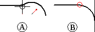
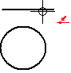
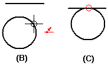
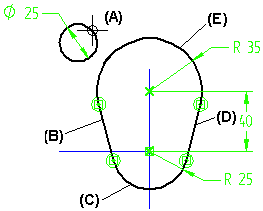
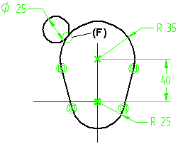

Make elements tangent
You can make two or more elements tangent.
To make two elements tangent where their end points meet
-
Choose Home tab→Relate group→Tangent .
-
Click at a point where two end points meet (A). The elements are adjusted to make the two elements tangent (B).

To make two elements that are not connected at an end point tangent
-
Click the Tangent button .
-
Click an element.

-
Click another element (B). One element moves to make the two elements tangent (C).

To make one element tangent to a series of endpoint-connected elements
-
Click the Tangent button .
-
Click an element (A).

-
Press and hold the SHIFT key and then click each element in the series (B) through (E). The tangent relationship is applied (F) when you release the SHIFT key.

Tip:You can use the Relationships option on the Tangent command bar to specify the tangent type you want.